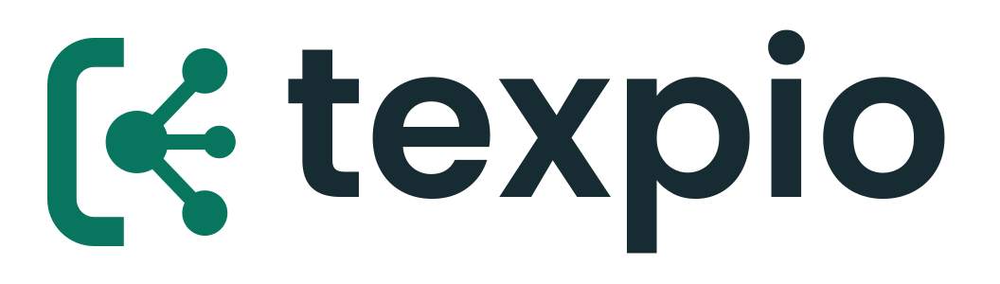
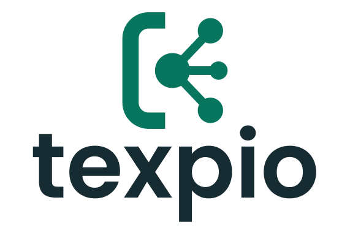
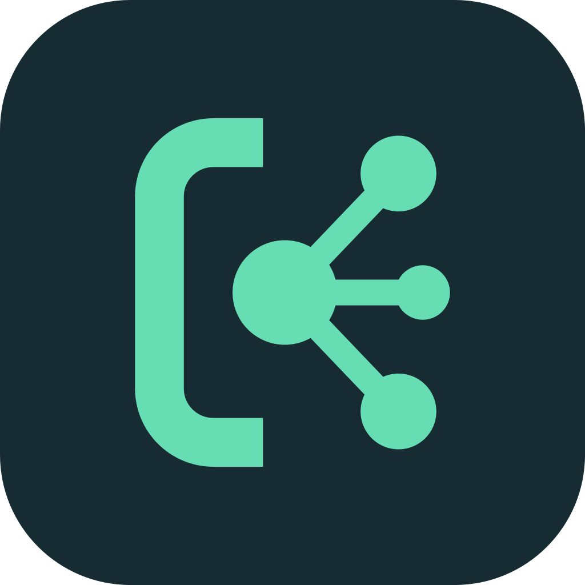
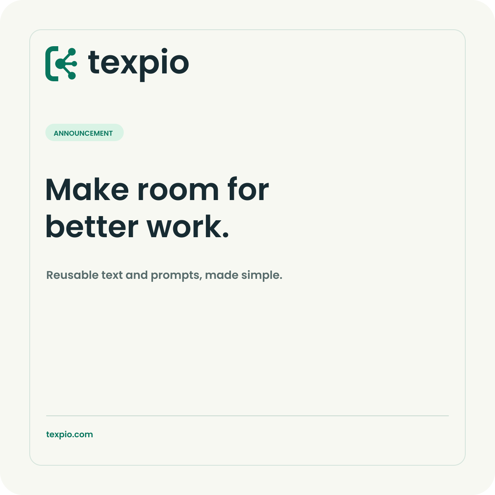

A small mark with a useful idea.
The bracket frames reusable text. Connected points suggest ideas expanding into different uses. Together with the wordmark, they make one flexible identity.

Give it room to breathe.
Use the horizontal logo when space permits. Choose the stacked lockup for compact, centered layouts and the independent icon for app or profile use.


Quiet foundations, bright ideas.
Ink and paper carry the interface. Mint adds energy; forest provides a darker accent for light backgrounds.
Primary text / dark surfaces
Accent on ink
Accent on light
Light surface
Secondary text
| Foreground / background | Contrast ratio | Usage |
|---|---|---|
| Ink / Paper | 13.77:1 | Body and headings |
| Ink / Mint | 8.81:1 | Text on mint |
| Forest / Paper | 5.23:1 | Links and small text |
| Slate / Paper | 5.29:1 | Secondary text |
Mint on paper is 1.56:1 and is not suitable for normal text. Contrast ratios are calculated from the specified solid colors; check contrast again when opacity, imagery or other colors are used.
Friendly, clear, functional.
Poppins is already part of the Texpio app and makes the identity feel consistent across the product and its communications.
Use sentence case, comfortable line spacing, and short headings. Use a monospace system font for shortcut examples and code so they stay easy to distinguish.
The logo wordmark is outlined and does not need a font installed. Social template text remains editable; install the bundled Poppins fonts if your editor does not load them automatically. See the included SIL Open Font License.
Ready to introduce Texpio.
These reusable starting points are included as editable SVGs and PNG previews. Edit the text to suit the actual announcement.
1500 × 500 px · keep key content away from platform crops.

1200 × 1200 px · replace the sample headline and message.
Sound like a helpful human.
Be direct, warm and practical. Describe the benefit first, then explain how it works in language people can understand.
Supporting description: Texpio helps bring reusable text and AI prompts into your workflow.
- Clear: say “save a snippet” instead of “optimize your text pipeline.”
- Approachable: use everyday words and a steady, helpful tone.
- Specific: describe supported features only after they are verified.
- Respectful: avoid exaggerated productivity, privacy or compatibility claims.